) described previously:
) described previously:In this section, two examples of high-index systems are described.
Consider, for this first example, a slightly modified version of the index-1 system () described previously:
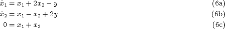
the only difference being between  and
and  .
.
We immediately note that we can no longer specify arbitrary initial values for the differential variables 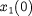 and 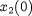 since they have to satisfy . Furthermore, we cannot convert  to a set of ODEs in
to a set of ODEs in  and
and  by using to eliminate
by using to eliminate  from
from  and 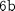 since does not even occur in !
and 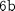 since does not even occur in !
It can be shown that initial conditions for DAE systems () do not necessarily have to be specified in terms of the differential variables . This might seem to imply that, although we cannot specify both and , perhaps we could specify some other combination of two variables, for instance:
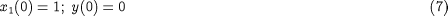
Then from , we would get 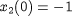 and from and :
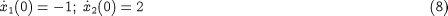
This, however, is not correct. We note, in particular, that is valid at all times  . We can therefore derive a valid equation by differentiating with respect to time:
. We can therefore derive a valid equation by differentiating with respect to time:
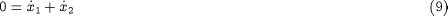
Now,  is valid at all times , so, in particular, it should hold at 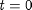:
is valid at all times , so, in particular, it should hold at 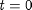:
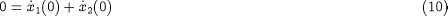
which is not satisfied by our initial condition . Thus the latter is, in fact, inconsistent.
In fact, and form a set of 4 independent consistency relations that the initial variable values must satisfy:
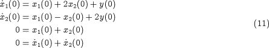
Since these involve 5 variables, we can specify only 1 (=5-4) arbitrary initial condition, which is less than the number of differential
variables (2) in the system .
Now, for the second example, consider a slight modification of :
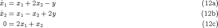
By differentiating with respect to time, we get:
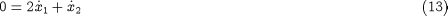
which, together with system  yields 4 consistency relations that the intial variable values must satisfy. So, once again, it appears that we can
specify 1 (= 5 - 4) arbitrary initial condition. However, if we combine 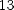 with and
yields 4 consistency relations that the intial variable values must satisfy. So, once again, it appears that we can
specify 1 (= 5 - 4) arbitrary initial condition. However, if we combine 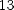 with and  , we obtain:
, we obtain:
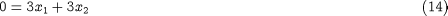
which is also valid at all times. We can therefore differentiate this with respect to time to obtain:
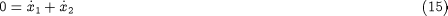
We now have 5 consistency relations , and 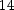 that the 5 initial variable values must satisfy – in fact, there is no freedom left with respect to the specification
of initial conditions. The only possible initial condition for the system is:
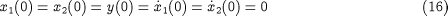
Overall, what we have seen is that the three example systems , and , albeit ostensibly very similar, are, in fact, quite different. Perhaps a natural question to ask at this point is:
Are there some further consistency relations also hidden within
Of course, we can easily obtain a valid relation by differentiating with respect to time:
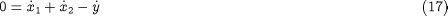
However, this does not impose any further restrictions on both 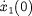 and 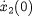 since it also involves a new variable 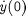.
Similarly, in the case of system , we could combine with and to yield:
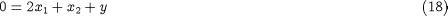
and then differentiate this with respect to time to obtain:
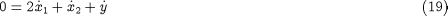
but, once again, this does not actually restrict and .
Overall, our original conclusions regarding the initial conditions of and were correct.
We can summarise what we have seen so far with reference to the general DAE system , as follows:
A set of initial values 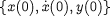 must always satisfy:
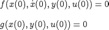
For some systems, the values may also have to satisfy additional relations obtained by differentiating one or more times with respect to time.